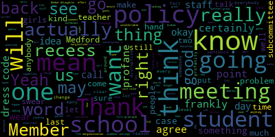
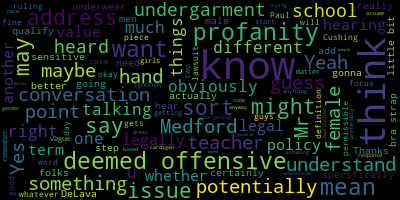
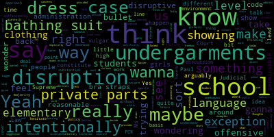
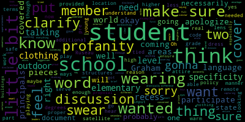
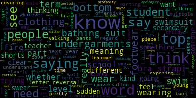

[Ruseau]: Yep. Thank you. Good afternoon, since the recording has begun and the four o'clock has arrived. Welcome, everyone. I'm going to call to order the rules and policies subcommittee meeting for May 25th at 4pm. Please be advised that on May 25th, I want my screen zoom. Sorry. Anyways, please be advised that on May 25 2022 from four to 5pm there will be a rules and policies subcommittee meeting held through remote participation via zoom. The meeting can be viewed through network community media on Comcast channel 22 and Verizon channel 43 at 4pm. Since the meeting will be held remotely, participants can log or call in by using the link https://nps02155-org.zoom.us slash j slash 95821066679. If you'd like to call in the number is 312-626-6799. Meeting ID is 958-210-6679. Additionally, questions or comments can be submitted during the meeting by emailing me at pruseau at medford.k12.ma.us. Those submitting must include the following information, your first and last name, your Medford Street address, and your question or comment. The agenda for tonight is, as approved by the committee on October 18th, 2021, the Rules, Policy, and Equity Subcommittee will draft a student dress code JICA policy for the Medford Public Schools. The policy recommendation will be returned to the school committee no later than February 28th, 2022. The subcommittee will hold at least two meetings on this topic before sending a recommended policy to the school committee. outreach to stakeholders will be made by the superintendent or her designee to ensure the subcommittee hears from students, teachers, and principals, the Mystic Valley NAACP, SAFE Medford, Interfaith Clergy Association of Medford, and any other advocacy group in Medford that may have an interest in this work. will be notified prior to these meetings as we embark on our efforts to create a just equitable and inclusive student dress code. I'm going to call the roll. First, I'd like to apologize that I am still having some shortness of breath and coughing from my COVID infection from two weeks ago. So forgive my shortness of breath and coughing all over the meeting. Member Graham. Member McLaughlin?
[McLaughlin]: Yeah.
[Ruseau]: Member Ruseau here, present and absent. So we've had two meetings on this so far and hopefully this will be the last one. since that February 28th date. I don't remember writing that down. I guess I should have been a little more generous with the time. But we have, if there's nobody who has a different idea, I'm going to share the current policy that we have been drafting. And then I'm going to review some of the recommendations that I've received from administration, and we can discuss those. And are there any, let's see. And for any of the public that is present on the meeting, if you want to speak or comment, don't hesitate to raise your hand through the chat, through the reactions, or wave, and one of us, I'm sure, will notice what I'm sharing. I probably won't be able to see that myself, but let's see.
[McLaughlin]: And feel free, Paul, if it's too much with the coughing or whatever, if you want one of us to read, we're happy to do that.
[Ruseau]: Thank you very much. Yeah, I'm not going, since this is our third meeting, I'm not going to read the whole policy again, as we have seen it for a little bit. So I did look at the, feedback from the assistant superintendents, and I put some of them in here, the ones that I thought we certainly will want to adopt, and then the other ones I think we can talk about and get to that. So under the Under the universal dress code, the policy permits additional student attire requirements when necessary to ensure safety in certain academic settings. Physical activity was changed to physical education, which I think, does anybody have a problem with that? Nope. And then, so I'm just going to mark that as accepted. Further down, this was a rewording by assistant superintendent, Suzanne Colussy. And I actually liked this. It used to just say principles are required to ensure that all staff are aware of and understand the guidelines of this policy. I actually liked that she inserted the core values and associated guidelines Because the core values really are the driver, frankly. Is everybody able to see this, or is it too small? I apologize. I have no idea what it's like for you all.
[Graham]: Can you make it a little bit bigger?
[Ruseau]: I sure can.
[Unidentified]: Let's see. How's that?
[Ruseau]: Did it actually get bigger for you? OK, good. Yeah. So barring any Anybody have any problem with adding that and serving those? Hearing none. This I also really appreciated as less wordy than the old version or harder to understand. Staff will use reasonable effort to avoid Dress coding students in front of other students is what it said before. To avoid issuing dress code discipline to individuals in front of other students. I think that's nice and clear. Any thoughts?
[Unidentified]: That makes sense to me. Great.
[Ruseau]: And I don't remember who suggested this, but changing from should to will. definitely think that's good. We don't really want to have problems that fester. And then, you know, when the parent finds out for the first time, it's actually the ninth time that it's been a problem. So, and I know that can that can happen. There's a lot going on in everybody's day. But I think that makes it clear.
[Unidentified]: Anybody have other comments on that one? No. Okay, let's hear.
[Ruseau]: Great, thank you. So we also, I think this was just left, the word may should be there. Makes more sense, sounds like English. Now I'd like to go up and grab the, can you all see the new tab that I just opened up? Excellent, great. So one of the suggestions was to change marginalization to marginalize. I actually like the use of the word marginalization. I know that has been a relatively, in the last few years, there's been some efforts to change the way we talk about the non-dominant groups. And instead of labeling them as if there's some kind of deficiency, and instead putting the fact that they are being marginalized on the dominant group that's doing the marginal, I mean, a non-dominant group doesn't marginalize itself. It's being marginalized by the dominant group, if it is in fact being marginalized. And obviously that's not required. So I like the use of the word marginalization to make it clear. that it's an active thing. I agree. Okay. This one, so this one here, recess. I agree and I have concerns. I 100% agree that, you know, especially obviously at the elementary level, I suppose at the middle level as well, but at the elementary level, We don't want teachers sending kids out in flip-flops and shorts when it's 20 degrees outside. I assume we would still go out for recess when it's 20 degrees. So on principle, I agree that there needs to be some level of, when appropriate, some level of adult decision-making and whether or not a student is dressed appropriately for recess. My hesitation, though, is that recess continues to be used as something that's taken for disciplinary reasons. And I don't see how this and discipline don't really come together in this point, but I just worry about any other reason why kids wouldn't get recess. And for those of us that are parents, looking at this list, many of us are parents, we've, I don't know if it's a gender free issue, but certainly, you know, with my own son, I've seen him happy to go outside in the middle of the winter, frankly, and just barely more than flip flops and shorts. And he doesn't get cold. And I'm horrified. But I guess I'm just, what do people think about this? I mean, we have to recognize that this is also for elementary and anybody wanna talk about this?
[Graham]: Paul? Yes. I was wondering if Ms. Galusti wanted to share some of her thoughts about that.
[Ruseau]: That would be great.
[Galusi]: Sure, sorry, I'm in a remote satellite location here. I think for me, yes, I understand that this dress code is gonna serve pre-K to grade 12, and so, I don't know about the specificity that you want to get to but I think when we're talking about young students so right now, what the policy is at the elementary level is that we do outdoor recess. If the real feel is. above 25 degrees or higher. So students need to make sure that they, you know, we have, schools have ways to make sure that if students need additional clothing or if things are needed so that they can participate in recess, that's provided. But I think in terms of students playing on play structures and being warm enough, Some of the pieces for me is just to make sure that students have the proper attire to be able to participate outdoors in a safe manner, which is the only reason why I had those two pieces on there. Sure.
[Ruseau]: No, I mean, I can't imagine why we wouldn't agree on that point. And I guess the recess. I'm sorry.
[Galusi]: I couldn't hear you, member Ruseau.
[Ruseau]: Can everybody else hear me?
[Unidentified]: Yes. Sorry, Suzanne. It's just you.
[Galusi]: Oh, I apologize. I apologize.
[Ruseau]: So I find what just dawned on me that we did just send the recess policy to this subcommittee, I think at the last meeting. So we can sort of cover any kind of, overlapping issues around recess and this policy when we do the recess policy. So I'm fine with adding it in if the other members are as well.
[Unidentified]: I'm with me. Yeah, I agree. Okay, now we just have to figure out how to say it because, where was it?
[Ruseau]: I'm just gonna put academic settings I would like to call academic settings recess to be academic settings, but Desi is adamant that it doesn't want to count recess as a part of the academic day, much to my chagrin. So I feel like it's important to put it like.
[Unidentified]: Yeah, does that look okay, everybody? Thank you.
[Ruseau]: No, thank you for thinking of it. That was just the original one. I actually had said they may wear all of these things. So I fixed that. We fixed that at the last meeting. So profanity is the one addition that on principle, I'm actually completely agree. But my understanding of the, case that really put a lot of this in motion in Massachusetts was around profanity on attire, in which case, in the Supreme Judicial Court said, we cannot restrict that. I really don't think that, just to be clear, I don't want a future where every kid is walking around with gigantic swears emblazoned on everything that they own. it's not the kind of school I would like to be, have gone to, and certainly, obviously our staff and many of our students would not appreciate it. On the other hand, given what the case, as JC said, I feel like we should leave out explicit language that is the opposite of what they have stated. So I'm not suggesting we add anything in here that says you can wear swears on your profanity on your outfits, but I think we don't want to get into a conversation or with our new policy immediately being somebody suggesting that it was, we just drafted it and we, these meetings are recorded and we purposefully just decided to go against what the court said. So that's my opinion on why I didn't suggest adding it in. What do others think?
[Unidentified]: I'll go ahead.
[D'Alleva]: I think, leaving the word in is good. I think what we would just need is some guidelines like that central administration would give the principles, so that you know everybody sort of on the same page because the problem with the profanity is it's. what we've talked about before, it's a little ambiguous, right? You could deem something profane different than I deem it profane. And then we run into, and I agree with you, like the case law, we've talked about this before, like, we don't wanna also do that, but I think policy and protocol are two different things. So if we come, this becomes part of the policy, I think it's good, but then we have a protocol of like certain words that, there's an agreement upon that we would consider to be profane that would cause an enforcement of the policy. Does that make sense kind of thing?
[Ruseau]: It makes some sense to me. I mean, there was certainly a time when if queer had been on an outfit, it would have qualified as profane. And if we were to have dress coded somebody for having queer on an outfit today, I might call the Boston Globe on the school system. what is profane both changes as well as does have an unfortunately large amount of room for interpretation. There are plenty of people who still think queer and gay and certainly other words are not, like, it's not uncommon in my day-to-day life, frankly, for people to whisper gay when they're suggesting somebody might be gay, as if there's something profane or wrong. And I just, who's gonna be the arbiter of this? And from an implementation perspective, every single teacher, staff member who, see something and wonders, is this profane? There's not like a hotline you can call and get an answer right away from Maurice or whoever. This is on the profane list. This is not on the profane list. And more importantly, there's going to be, you know, it's frankly, you know, it's the FCUK, the brand of clothing. I mean, it's a brand of clothing only because of actually I don't know for a fact.
[McLaughlin]: It's FCK, it's not FC.
[Ruseau]: Okay, but thank you.
[McLaughlin]: But I mean you know what it is, but obviously it's they took out the U, right?
[Ruseau]: Yeah, and I feel a bit concerned that we're going to get into battles. One of the reasons we're here is that from staff member to staff member, school to school, what was considered a violation of the dress code changes day to day.
[McLaughlin]: Paul, Ms. Galussi and Mr. Cushing have their hands up. Dr. Cushing.
[Ruseau]: Ms. Galussi, I'm sorry, you were first, I think.
[Galusi]: That's okay, I just wanted to clarify a few things. I'm not as less, I'm not as tied to the word profanity as maybe I am about swear words. And again, I think I'm coming at this looking at an elementary lens as well, though I do have two high school students myself. But part of the work that I did with my principals was just to go through this proposal and make sure that I got you know, input from the principals in the buildings. And for me, I think I want to ensure that students are not coming to school, especially at my level, wearing clothing with swear words on them. So I wanted to clarify that profanity to me has nothing to do with the examples you gave and everything to do with what I guess we could clarify instead of profanity as swear words.
[Ruseau]: swear words simply had all the vowels taken out. Every adult knows what it says. Is that a swear word? I mean, this is real life. This is going to happen. You know for a fact that's going to happen. So is it a swear word or not?
[Edouard-Vincent]: It is, sorry, I apologize. It is still the example that you gave where they did the letter reversal. And I think, I don't know, maybe it's the teacher in me, but all of a sudden you find yourself putting the letters in the proper order. So you're kind of like swearing at yourself, like after you say it quickly. But I don't know if, When I see the word profanity, I'm thinking of swear words. But as you were saying, Member Ruseau, each decade, there were certain words that it's acceptable one year, and then the next year, all of a sudden, it becomes an offensive term or word because the young people have changed the meaning of it. And so it has multiple meanings. And so I'm trying to think of what could be, I don't know if we could say based on the time period, but as you were saying, words have multiple meanings and there's a lot of clothing out there and different vendors that are making things that either there are symbols that are clearly inappropriate or again, letter reversals. So it's not technically a swear that you're reading, but If you, you know what it, you know what the intent is. And so, just trying to limit that. So I just wanted to say whether it's a swear word or not but the word, you know, That other company where they did the letter reversal next year, it can be a new word, you know, that is all of a sudden it's the new word, like everyone's using, you know, fire. Oh, that's hot. It's fire. It's fire. Next year, the word fire could be considered a curse word because the young people just change it and give it a different meaning. So I don't know if there's a way to I guess some of it's objective. I'm stuck because I'm saying, I don't know if it should be language that could be perceived as offensive at the time, but it's going to continue to evolve and change. So I feel like that word is a moving target. I don't know if I'm really helping the conversation at all.
[Ruseau]: You are. It's a moving target is a great way to look at it also because what isn't a moving target though? I'll count myself amongst the old people here. Our idea of these kinds of things, except for those of us that are really attuned to pop culture, and I think, I don't know if any of us are, our idea is relatively static or stagnant from a formative point in our life. And so the people that will be enforcing what is profane will almost by definition have to have a different idea of it than the students. So, I mean, other than in Milford or Milton or wherever it is where the 19 year old is on the school committee, most of us are not going to have a good, have a sense of this stuff that is helpful.
[Unidentified]: Dr. Cushing. Peter. Your hand's up. I'll come back to Peter.
[Ruseau]: Melanie, Member McLaughlin?
[McLaughlin]: Yeah, I mean, I think that we're having a good conversation here, but I think that we're talking about two different things, if I might. I think on one hand, if I'm hearing correctly, on the one hand, I'm hearing Member Ruseau talking about What's legally permissible. And on the other hand, I'm hearing us talk about what Medford score values are so I think there's two different things that we're talking about we should tease those out a little bit. And so, you know, to what point is this policy is it you know what's legally permissible or is it. You know Medford public schools policy and so I think sort of answering that question might be helpful. And then just in terms of this particular word, you know profanity or whatever. I think, you know, a workaround could potentially be, you know, deemed offensive. you know, are pornographic contained threats deemed offensive? And so deemed offensive, I know, is a little bit looser than profanity, but deemed offensive, maybe we have some definition of, you know, further definition of what's deemed offensive or deemed offensive, you know, by, I don't know, central administrator or something. But if profanity is clearly not the legal term, because, you know, there was a ruling that says that that's not the issue, I think, you know, we have to think about, again, what's Medford's core value and policy around this and what is, you know, the legal piece and whether or not it gets challenged legally is another, you know, is a conversation, I guess, for another day. But I think if we focus more specifically, I guess it's a fine line, but I would say we should focus more specifically on what Medford's core values are and what we wanna say here. And then, you know, the legal piece can, you know, either be vetted through our attorney and or, you know, whether or not there's a lawsuit. But if we know specifically profanity, then maybe we just want to think about a different way of wording that and deem defensive potentially, you know, could be it. I don't know. Thanks.
[Unidentified]: Thank you. Member Graham.
[Graham]: I was curious if you could tell us in summary, specifically what the Supreme Judicial Court ruled, because I feel like we're trying to talk ourselves into doing something that's explicitly the opposite of what the Supreme Judicial Court told us was permissible.
[Ruseau]: So I hope that Peter's internet's good enough, because I don't know why I don't have that actually open as a tab. I'm not gonna hit Google. Was this the one, Peter, is this the case where, you know, one of the nicknames for Richard is often considered as, you know, everybody seems to have an Uncle Dick, but if you put that on your shirt, was that this case? I wish Peter's internet was better.
[McLaughlin]: I can Google profanity in schools and Supreme Court ruling while you guys continue the discussion, see if that helps.
[Ruseau]: Thank you. And we can, we can circle back after Peter's internet stabilizes if it does. So let me just get to these other things and we'll come back to profanity because Kyle versus South Hadley. Yes. Thank you.
[Graham]: The clear, unambiguous, and mandatory language of Master in Law, Chapter 71, Section 82, protecting the right of public school students to freedom of expression admits no exception or limitation for arguably vulgar, lewd, or offensive language absent a showing of disruption within the school. So there is no- Offensive isn't acceptable either. Yeah, there is no exception to limit arguably vulgar, lewd, or offensive language.
[Ruseau]: And I think that the rest of that sentence is sort of the important thing. So if a student's wearing something, many of us might find vulgar, profane, whatever, offensive. And the student goes and sits in their chair and classroom operates fine. then it is not a problem. And the classroom not operating fine can't be because the teacher's uncomfortable with it. I mean, if the teacher is the only person who's finding it disruptive, then what I'm hearing when I hear that sentence, it's about whether or not the place could function. And it can't just be that the staff are the folks who are uncomfortable with it, because, I mean, then we're back to square one, where I don't like red, nobody should wear red in my school. I mean, that's kind of a crazy example, but it also is what the point of that ruling is.
[Graham]: And I guess from my standpoint, what would constitute disruption at the elementary level is gonna be really quite different than what's gonna constitute disruption at the high school level. So I think, at the same time, I take exception to the overuse of the idea that clothing is disruptive and I'm not in favor of the actions that I've seen happen under the guise of disruption. So I wonder if a I wonder if we should circle back to this at the end of the meeting and make our way through the rest of the comments for discussion but but also think about. you know, maybe there's a separate bullet about profanity that says that it is discouraged and, you know, that the school administration has the right to restrict it in the event that it is disruptive to the school environment with some examples of, you know, what might be permissible in an elementary school versus a high school or something, you know, something that sort of, draws that line out a little bit, but doesn't make it such that, like happens today, everybody gets to decide what they want the dress code to be and enforce it as they see fit.
[Ruseau]: Thank you. I think that's a good idea. Let's hear from Mr. Regan, since his hand is up, before we check out the other stuff and then circle back. Sean.
[Sean Beagan]: Oh, thank you. Sean Biegun, 362 Lawrence Road. You're dancing around the issue, whether you use profanity, vulgarity, obscenity, whatever it is. It's a word on the clothing that causes disruption, makes someone uncomfortable, that necessarily is going to have to be in the opinion of the teacher or the administration to make that call. They're not gonna pull the class and say, is anyone else disturbed by this shirt that says F-U-C-K yourself on it? I think you're dancing around something or trying to, I understand what you're trying to do and you're trying to allow for as much freedom of expression as possible and not run afoul of Massachusetts statute. But honestly, I don't think it's as complicated as you're trying to make it. You can remove profanity because that seems to be a hot button word that's been challenged before and it's specifically used in that case. But I think you can throw any other word in there that isn't synonym. it's obviously gonna come down to the call of the teacher or the staff or the administration or something like that. And maybe it's gonna be brought to their attention by another student. Maybe it's just gonna be their calls because it's so over the top and everyone in class is giggling. I mean, it's gonna be, that seems to me how it works. That's the stories I hear that come home to my house. Thank you.
[Ruseau]: Dr. Cushing, do you wanna speak before we move on to this? Oh, audio is connected.
[Cushing]: So I apologize for that, trying to get to a place with decent internet connection. So I would be exceptionally concerned at the secondary schools about not having something in there. As Attorney Began just mentioned, I was able to catch a little bit of what he mentioned. And while the South Hadley case and other case law, all right, has placed a higher degree of scrutiny on Massachusetts public schools, It doesn't necessarily at times limit the ability of the school leadership to make determinations. And I would be exceptionally concerned that by not saying something around profanity, swear words, or other things, that we would be opening a door that would be extremely difficult to close.
[Ruseau]: I agree very much, Peter. Are encouraged to not.
[Cushing]: And while I appreciate encouraged to refrain, I also like where we made suggestions about shifting things from shall to will or shall to must. You know, and I think what I think what like the the tenor of the South Hadley case was was a almost an egregious overreach by school leaders. And it's it's making sure that there's a reasonableness to it. It's much like you can't yell fire in a movie theater. You can't. Your freedom of speech is limited and bounded by certain things. And there are There are, you know, the constitution doesn't stop at the schoolhouse door, but there are limits as we are developing members of our society.
[Ruseau]: I mean, the right to have an education is also a right. And so that's sort of how I view that whole disruption, you know, the freedom of speech. impinging on students' right to an education is where limiting happens. Member McLaughlin, your hand's up still. I don't know if you wanted to talk again.
[McLaughlin]: Actually, I don't. I was just sleeping and messing.
[Ruseau]: Oops, and I got an echo. Thank you.
[McLaughlin]: All right. Can you hear me? Yes. I said, I actually don't, I'm leaving a message, but I have to step, not step away. I'm gonna have my earpiece in and I have to step downstairs to attend to something. I'll be listening, but I will be off screen for about five minutes.
[Ruseau]: Okay, thank you. So, I mean, what does that send? The word disruptive is particularly something I don't want to be, That word has sadly been misused and essentially as a way of making sure girls bodies are not visible. And frankly, I think that the majority of complaints and problems we have are around. the word disruptive, and it frankly just means that at this point. We may be having a rather academic conversation right now where we think disruptive means something else, but I've got a barrage of emails from students on the new policy and disruptive doesn't mean anything to anybody but that. So does this sentence look okay? Excuse me.
[McLaughlin]: So if I might add, just, is it okay? No, if I might add, just getting back to Mr. Began's point, I think, again, the synonym, which is what I was saying earlier, is fine. And I think it's just gonna be a matter of not just how a teacher interpreted initially, I think it'll be a matter of how the teacher or admin interprets it. But if it's raised to a level that we need to address, then we will. And again, whether it's another issue in terms of a lawsuit or something like that, then obviously we address it. But I think that, yeah, using a word that's just a synonym but a little bit more vague than profanity would sort of address this.
[Ruseau]: Yeah, I think, so for me, putting it in as they may not wear these things, I mean, I don't know, I mean, the Supreme Judicial Court said, yes, they may. So I feel very uncomfortable saying that they cannot come to school with the word dick emblazoned on it, because they can. I don't wanna encourage it, but the students can.
[Graham]: Remember, so I just added to the chat, maybe a suggestion that could work.
[Ruseau]: Yeah, I like that. I like that better than this.
[SPEAKER_06]: I think that's a really good compromise. Nice wordsmithing.
[D'Alleva]: Yeah, I think it's really good. Thank you, Jenny.
[Graham]: Welcome. Yeah, and I think Some of the things I was trying to navigate around was this sort of like arbitrary use of the word disruptive. And there's somewhat no way around that but address, you know, sort of addressing that. the line of demarcation is a disruption to the learning environment. It's not just that you roll into school with FCK on your shirt and that at that point on a case-by-case basis, school leaders will deal with the disruptions on a case-by-case basis. I think that in my mind sufficiently addresses Ms. Galussi's concerns about disruptions being quite different at the elementary level, like FCK is gonna be disrupted at the elementary level. So I think that provides, you know, some guardrails without being like flagrantly in opposition with what the case law has provided.
[Ruseau]: Thank you. I'm going to actually read that sentence out loud just because I'm not sure Member McLaughlin actually has her eyes on the screen right now. The new suggested sentence is, clothing that displays profanity or other vulgarities can disrupt the learning environment. School leaders are reserved the right to address disruptions on a case-by-case basis. If there's no objection from members, we will add that. Let me go back to the We managed to get through that one. It's the one I knew was going to eat up a lot of time. So I think that this one from Assistant Superintendent Galusi, I, what do we have up here? Students must wear, yeah, I mean, I guess, Bathing suits, I mean, frankly, my son does go to school in a bathing suit. It's his favorite kind of shorts. And undergarments, most T-shirts and tank tops are undergarments for people of my age group, at least. And I certainly understand the point. You don't want somebody just showing up with a frilly pair of underwear and, you know, or showing up in a bikini to school. On the other hand, which I mean, would be incredibly uncomfortable at the high school. It could be freezing or hot, you won't know. But I'm just not sure how to include this
[Galusi]: Again, I know they're drastically different, right, in my world versus the secondary world. Although I'm open to member Graham's wordsmithing again here, because I just feel like capturing something that just states that students, you tried covering it a little bit above about how certain private areas have to be covered, but I'm just concerned a little bit that if there's just not a little bit more specificity to the language that you also in turn are gonna get some students to probably purposely push the envelope just a little bit.
[Ruseau]: Yeah, I do want to acknowledge that you are absolutely right. There are going to be students who are going to push the envelope very soon after this becomes policy, if it does pass. So I don't want to ignore that. I see Mr. Blanca.
[D'Alleva]: Yeah, this is interesting, because you mentioned that, but I read. But also, we do have swim classes here at the high school and physical education time. someone might want to deem wearing their bathing suit, you know, to save time on on changing and all of that stuff. So I just want to put the high school perspective of why someone might be wearing a bathing suit to school. I've seen it happen before, but it's not a frequent kind of thing, but I have seen mostly male students that know that they have swim class due to physical education, they have wore bathing suits. So I think like you said, it needs to be sort of a member Graham wordsmithing that could help alleviate some of this ideas of what's what.
[Cushing]: If I can just piggyback too, I mean, generally speaking, in physical education class, it's considered methods of good hygiene to change out of whatever your workout gear is. Therefore, based on like the physical education standards, it would not be a good practice to be wearing your bathing suits as clothing, especially if you've just been participating in a swim class or going to participate in a swim class. Um, so I mean, under what, what the physical education standards are, usually it's, you know, students come and they change, uh, and, you know, we'll then change out of the workout clothes because then you're not going back to class, uh, sweaty and, um, you know, potentially causing issues for those around you. So, I mean, once again, I also worry about this now invites those students who want to push various areas of the dress code when trying to realize like okay how are we growing as an organization to understand where students are and where families are while also maintaining a sense of professionalism and instilling professionalism in our students especially as they matriculate from high school and enter the collegiate or workforce or for the trade schooling or whatever else they may be, but there'll be certain standards that we want to have prepared them for.
[Edouard-Vincent]: Yes, the comment that I was just going to make about the covering of the bathing suits, and I know that a few bullets up where we're pretty explicit in terms of not wanting people exposing private parts, showing their body. If you're thinking about a bathing suit for a female student, if she was choosing to wear a two-piece swimsuit, we do clearly state that they should have a top, a bottom, and footwear. So they shouldn't be walking barefoot in the schools or outside. They should have some type of footwear on. They need to have a top and they need to have a bottom. And I know that there are, Some swim trunks that are really long, like they look like skateboard pants or whatever so some students may actually wear that as part of their fashion, but I think just being clear that we don't want to encourage. swimsuits, people saying now, you know, it's warm, swimsuits, you know, this is my top, my bottom for the day. So I think if we're saying to them, you need to wear a top, you need to have a bottom and you need to have footwear, that being explicit about that, so people just understand, I don't know if it's, So, whether someone is having a swim class as part of their PE or their particular rotation, they understand that they are. You know, to have their swimsuit covered in that regard, or if it's someone wearing the swim trunks and they go swimming and they don't plan on changing their clothing, we wouldn't want someone walking through the hallways with wet clothing on for several hours it's just people can get sick and it's not something that you would be encouraging. Again, I think it's okay to say cover bathing suits and undergarments. I'm thinking, again, at the secondary level, we know we have the pool here. And if for whatever reason students were to be wearing it at the lower grade levels, that they should have a top a bottom and footwear, and that we're not talking about bathing suits. It's kind of like that gray area, but I think saying that that's not what we wanna see. And again, it's up to the administrator or teacher to have a conversation with the child or with the parent to say, this is what we're hoping to see the child wear to school. I see nothing wrong with saying that, understanding that you said, well, my son does wear swim shorts to school, but if he's wearing them more as a fashionable statement and it isn't causing any kinds of disruption, that's, I think it's, in that regards, we're not gonna be the swim shorts police, but again, I think trying to be explicitly clear, sometimes you end up opening the door to challenge, no matter what way you look at it.
[Unidentified]: I was actually
[Graham]: wondering, and I don't know if this is like a fully formed idea, but I mean, what we're dancing around is the difference between boys bathing suits and girls bathing suits, right? Like no one cares that Paul's son wears his swim trunks to school, but what we're really saying is what we're worried about is girls wearing bathing suits to school. And I think As I was thinking through this, I went back to read and one thing we could do is say, in the bullet that says that students may not wear clothing that intentionally show private parts, clothing must cover private parts in opaque material, maybe it's intentionally show private parts or undergarments. And the reason I hesitate to say that is because I don't wanna hear stories about people being sent home or dress coded because their bra straps are showing. That's not what we're talking about. So I like really hesitate to like even say this, but I think what we're trying to say is we don't wanna see your underwear. I feel like that's reasonable and we need to find a way to work that in. And I think bathing suit can sort of be swept in if we can adopt some language about not wanting to see people's underwear.
[Ruseau]: Thank you. I think your point, though, that we're really just talking about girls. I don't want to see boy underwear either. to be clear. No, but about bathing suits. Right.
[Unidentified]: Yeah.
[Ruseau]: If every boy tomorrow comes to school in swim trunks, there will be zero dress code, even with the current policy, not one boy will be receiving a dress code violation. And if girls wear those same swim trunks, they also will not receive it. So what we're really talking about here is how much of a the female body, are we okay having visible in class? That's what we're talking about. And that, if I go back up to here, the core values, girls are not responsible for the reactions of the rest of their classmates and their teachers to their bodies. That's our core value. And so I, I'm getting less and less comfortable around this idea. I don't envision many girls having an interest in going to school in a two-piece bikini. And if they do, it's for a reason such as attention and certainly not comfort. But, you know, Hey, I'd be okay with getting, saying no bathing suits, but I also want somebody at the door checking the backs of every one of the boys when they come in to see, is this a bathing suit or is this shorts? And we're not gonna do that for many different reasons. So.
[Graham]: Yeah. That's why I was wondering if talking about intentionally showing undergarments sufficiently like, covers us without having to dabble in this arbitration about bathing suits.
[Ruseau]: I don't know who was next. Suzanne, were you next? Go ahead.
[Galusi]: I will be brief. I just wanted to say one thing. Full disclosure, I was not aware necessarily that this entire document was going to be shared with the edits. So when I put- I'm sorry. That's okay. But when I put in here suggestion to cover, I meant discuss. That's for one, because this document was at first internal and I was having discussions with my school leaders as well as the central team. So I don't want people thinking that that's in there saying to cover up just because the semantics of that have been going I've been listening to it. I do like in where the superintendent was headed in this discussion, because I do think it is covered a little bit above. And I think if we put a similar disclaimer that member Graham was talking about, that would probably cover it in my eyes. And when I wrote this, it had, Again, I will state that I am the proud mother of two daughters, so this did not have anything to do with the difference between what girls are wearing and what boys may be wearing to school or what any student is wearing to school, as more as it is that some students would come in their underwear and rather than having I just feel like there are areas in which I wanted to have a discussion around it, not necessarily the exact language, if that's clear.
[Ruseau]: I do apologize for sharing it without actually even asking you, because I understood this as just being a jumping off a conversation point. Thank you. Mr. Began. Yeah.
[Sean Beagan]: This issue, I think what Suzanne is trying to do, I think rightly so, is cover a potential loophole here. And you could have a girl show up in a bikini, but it's not just girls. You could have a boy show up in a Speedo bathing suit. And people might be going even more insane if that happened than a girl in a bikini. It's not just a boy or girl thing. I think it's just covering, excuse the pun, covering your backside so that people don't show up in bathing suits trying to push the envelope. And I think you could just add in that up where you have students must wear, maybe you have a disclaimer that, you know, bikini briefs, boy or girl, are not considered a bottom and a bikini top is not considered a top. I think that's what we're talking about. Just to avoid the day when they walk through the door, I mean, that's all you try. And I agree with you, not many people would do it. There might be one or two kids brave enough in the whole school system to do that. God bless them. But I certainly didn't have that confidence in high school. So in any event, but I think that's what you're trying to protect against.
[Ruseau]: Yeah, thank you. I certainly agree. I also just, I'm just remembering an email I received from a student who pointed out that our current dress code policy seems to be perfectly fine with our cheerleaders wearing things that are not considered acceptable. And I thought that was a very interesting thing to note that we, even with our policy that has been traditionally rather restrictive and conservative, We not bad at an eyelash that in school sponsored during the school day events, we allowed the girls who are on the cheerleading team to wear clothes that they could not go to class in. So I just think that's, it's really not possible to ignore the fact that this is a gendered conversation. It is. And I lost my train of thought. Jane, did you wanna speak? I know your hand went up three or four times and then came back down.
[SPEAKER_08]: Hi, I just, I didn't know actually.
[Ruseau]: If you could just name and address for the record.
[SPEAKER_08]: Yes, I am Jane Hamill, 16 Maynard Street. I realized after the fact that I wasn't sure if I was supposed to speak or allowed to speak. So I just wanted to just throw in the, I just really appreciate everyone's thoughtfulness. I did appreciate the kind of the covering of, you know, the wearing a top, a bottom and footwear and the way that those are already kind of defined, just wearing just a bra top or just a bikini top, like already is covered in there, right? It's already in there that that's, that is not in fact a shirt or a top. And then I just wanted to, just as a parent of high schoolers and all that, just reiterate the importance of finding a way to not have any language that says no undergarments should be showing and that's with the bra strap issue. It just, I know that kids are getting dress coded for that right now, like this school year in a couple of the schools. And I just think that there's so many styles and so many, so many moments where that is not really necessary. And so I'm really hopeful that the committee will have a way to have language that just does not allow for that to occur.
[Ruseau]: Thank you. Thank you. Member Graham.
[Graham]: Yeah, I was. Jane, I'm with you. I do think that is a challenge. So I wonder if back to the bullet about and, you know, intentionally showing private parts, that that is not allowable. Maybe it's like a substantial like fraction of undergarments or something like that. Like I wanna clearly make sure we're not dress coding girls based on their bra straps, but I generally don't wanna see people's undergarments in life. So I think thinking about a notion that the majority of somebody's undergarments are covered, the vast majority seems reasonable. So I don't know if there's a way for us to say, intentionally show private parts or substantial portions of undergarments, or maybe we just say, or undergarments, and we say, you know, this does not include bra straps. I don't know. Maybe we just like really name it so that there can be no confusion.
[Ruseau]: I personally like calling out explicitly that, I mean, honestly, I'm still blown away that bra straps are considered anything other than just that they're, I don't know, I can't fathom how that's even an issue in anybody's mind. But does this sound okay? you know, like any policy, we can revisit if it doesn't, things don't roll well in the next year or two, we can come back and revisit. I did talk, I'm actually adding it to the wrong document.
[Graham]: I think that sounds reasonable as an addition to qualify this discussion.
[McLaughlin]: I think May I remember, Marissa? Yes, yes. I think, I mean, I think I understand the intention. And I also think that when you start parsing out what undergarments means, there's going to be all this like, well, what about the front of my bra strap? Or what about the top of my underwear? I mean, I think it gets really going into the minutiae when we start to parse out what this means. And so I don't know. Undergarments too, I think, is so vague. I guess you could just say underwear. I don't know. I think undergarments can be any number of things. I think a lot of the girls, certainly I have a young adult female in my home and they essentially wear what looks to me like a bra under a shirt maybe or a cardigan or something like that with the cardigan open. And, you know, does that qualify as an undergarment? Does that qualify as underwear? Does that qualify as bra straps? I don't know. I think you're gonna like, we're really sort of getting into the weeds with some of that minutia. So I don't know. I would be curious to hear what our folks who are in the high school every day seeing this have to say. So maybe Maurice or Mr. DeLava, if you could weigh in here, it would be good to hear from you.
[Edouard-Vincent]: I feel comfortable with the term undergarments. whether it's bra tops or thong underwears or boxer shorts or kids wearing their pants halfway down their. It's all undergarments and we really don't need to see it. It's not necessary. So again, going back to the top, a shirt, a blouse, a sweater, a sweatshirt, a tank, et cetera. We say top, we say bottom, we say footwear.
[McLaughlin]: So are you okay with the bra strap is what I'm asking.
[Edouard-Vincent]: Yes, I'm comfortable with a bra strap because some tops have very thin straps. And so the bra strap will show. But again, I know that there have been situations where students weren't just exposing the bra strap, but other parts. And it's just, I think it's, If we can focus on, you know, tops bottoms and and footwear and say this is what our expectation is. And if you know you have one or two outliers. I know that the teachers and or administration will speak to those students, but if it's something where it becomes egregious. And, you know, people want to say, you know what, this is my top. My top is, you know, a bra, or my top is, you know, something that really, you don't need to wear that to school. I think by saying undergarments where, you know, We're covering all of it, whether it's it's or for male, because, again, they both have different clothing styles, and we do see undergarments of male students as well, quite often and they're told, you know, fix your clothing. I think by saying undergarments, if people, and again, we've qualified it about saying with the exception of the bra straps, that that's pretty clear in terms of what it is that we're talking about. And again, I see that as being more of a secondary concern, but I think we have more, you know, At the elementary levels, I don't see as much of these types of issues surfacing. It would be more at the secondary level where you would have students really wanting to see what they could get away with in terms of clothing. So I feel like this is a happy medium and then removing the other piece about the bathing suit, et cetera. I think that this covers it.
[D'Alleva]: And, yeah, let's reiterate I agree with the superintendent I think the undergarments tends to cover it on a personal level as an administrator likes the school see I also have a senior daughter as well. I personally. do not get involved with female garments in the school because it leads to another problem. So for example, if I saw a bra strap, I'm not going to confront a girl and say your bra strap is showing because it could lead to potential other things of a male addressing a female student. uh, regarding that. So I think with the term undergarments, and again, this is what I mean by protocol, you know, as we, as a team discuss, you know, things like, okay, if bra straps, like that's not going to fit in this part of the policy, but this will fit in this part of the policy so that the school leaders know what to address. Because I think if it becomes ambiguous to, um, it's left up to interpretation and that doesn't always come out as the best outcome either.
[Unidentified]: Number or so. Yes. Yeah. Yeah. Yeah. Sorry.
[McLaughlin]: Yeah. So I was just going to add, you know, I'm assuming Mr. DeLava, but I guess I don't want to assume. And for the folks who are on the call, I want to make sure that we're clarifying anyway, or folks watching that dealing with dress code, potential dress code violations or anything sort of that manner that You guys obviously think about it from a team approach so that a male teacher can address males, preferably a female teacher can address females, preferably. I'm assuming that that would be the norm anyway, is that right?
[D'Alleva]: Yeah, that would be it. So for example, if I saw something that deemed inappropriate on the female side, I'm going to contact my female AP. because I think that's just a better conversation to have. If I see a male student, as Dr. Edouard-Vincent stated, that, hey, you're showing your arm again, that's an easy conversation for me to pull the student aside and say, hey, we wanna just kind of fix ourselves and move on with our day. So yeah, we do here at the high school, we use it as a team approach just because there could be other, like I said, there could be other ramifications that go on with the gender. And it stinks that that's, like was said, this is more on a female level, unfortunately, which, we're always talking about equity and how that should be. So yeah, we try to just address it as best we can. And I, again, I don't ever want it to be like in the hallway, you know, this is showing, you know, that should be a conversation that's pulled aside.
[Unidentified]: Thank you.
[Ruseau]: Member Graves, did you want to speak?
[Graham]: Yeah. I feel like we went down a really strange rabbit hole right there that I have take a lot of exception to when I think of a team approach, I don't think that that ever means like promoting and perpetuating. sexism. And that's what I hear in that statement, although well intended so I would encourage the administration to revisit the input, how they approach dress code as they implement this policy because I think the point of this policy was to take all of the implicit sexism out of the mix and off the table. And if the administration continues to deal with dress code matters in a way that's counter to that, then we're doing our students a disservice as we talk about equity. So that neither here nor there, I did wanna do a time check, it is 10 past five.
[McLaughlin]: Yes, so our- I also just want to, may I remember, so just as a point of information or as a response to that, I just want to clarify, that's not what I heard. So I think that that's part of this, is that so much of this can be subjective, and that's why we're trying to be so nuanced in so much of it. So what I heard, or certainly what I intended when I was raising that and what I heard Principal DeLava respond to me as too, was that we're being sensitive to the needs of, are individual students based on how we are presenting to them concern. There's not a male approaching potentially a female and and further embarrassing them based because of all of the gender sort of issues or norms or what have you that exist there. Not that we're targeting girls more or targeting boys more or anything like that. My point was that we're actually being more subtle and more thoughtful about how it's being approached. And that I know that certainly my child or other children I would assume would prefer to be approached by potentially. And again, this is such a gendered conversation that it's really hard to have the conversation. So there's even more nuance there, but that it's about being sensitive to the needs of people across gender that you might not understand that perhaps as women, we may understand some women's issues better. And as men, men may understand men's better issues better. And again, that's the caveat of trying not to be so gendered, but more about being sensitive to other people. So that was what I heard in the administration administration's response. Thanks.
[Ruseau]: Thank you. So I believe those were all of the parts of the policy that we needed to review. And is there any last comments before I ask if there's a motion to report this out favorably, hopefully? No. Would anybody like to make a motion to report out the language as is?
[McLaughlin]: Motion to report the language out as is. to the school sergeant may.
[Unidentified]: Thank you. Member Graham? Yes. Member McLaughlin? Yes.
[Ruseau]: Member Ruseau, yes. Three in the affirmative. I want to thank everybody. This was a hard one. I think the outcome is Well, damn good. You know, it's a lot of society and history and ideals all coming together in one policy that makes it really, really challenging. And I just want to reiterate something I've said in other meetings. This is language we can change a week after we implement it. So if we've screwed stuff up, frankly, I shouldn't swear so much, but if we've messed things up so much in some way, we can revisit it. It's not set in stone. So I really appreciate all the open dialogue and effort to get us here. So.
[McLaughlin]: Thanks, everyone. Agreed.
[Ruseau]: Motion to adjourn.
[McLaughlin]: Motion to adjourn.
[Ruseau]: Second. Member Graham.
[Graham]: Yes.
[Ruseau]: Member McLaughlin. Yes. Number so, yes. And thank you to all the public that came. A lot of public came to this and I greatly appreciated that as well as the administration. Have a good night, everyone.
|
total time: 28.3 minutes total words: 3724  |
total time: 6.97 minutes total words: 1281  |
total time: 7.86 minutes total words: 1039  |
total time: 4.66 minutes total words: 665  |
|
total time: 9.07 minutes total words: 1224  |
|||
{kind=link}
{kind=link}
{kind=link}
{kind=link}
{kind=link}